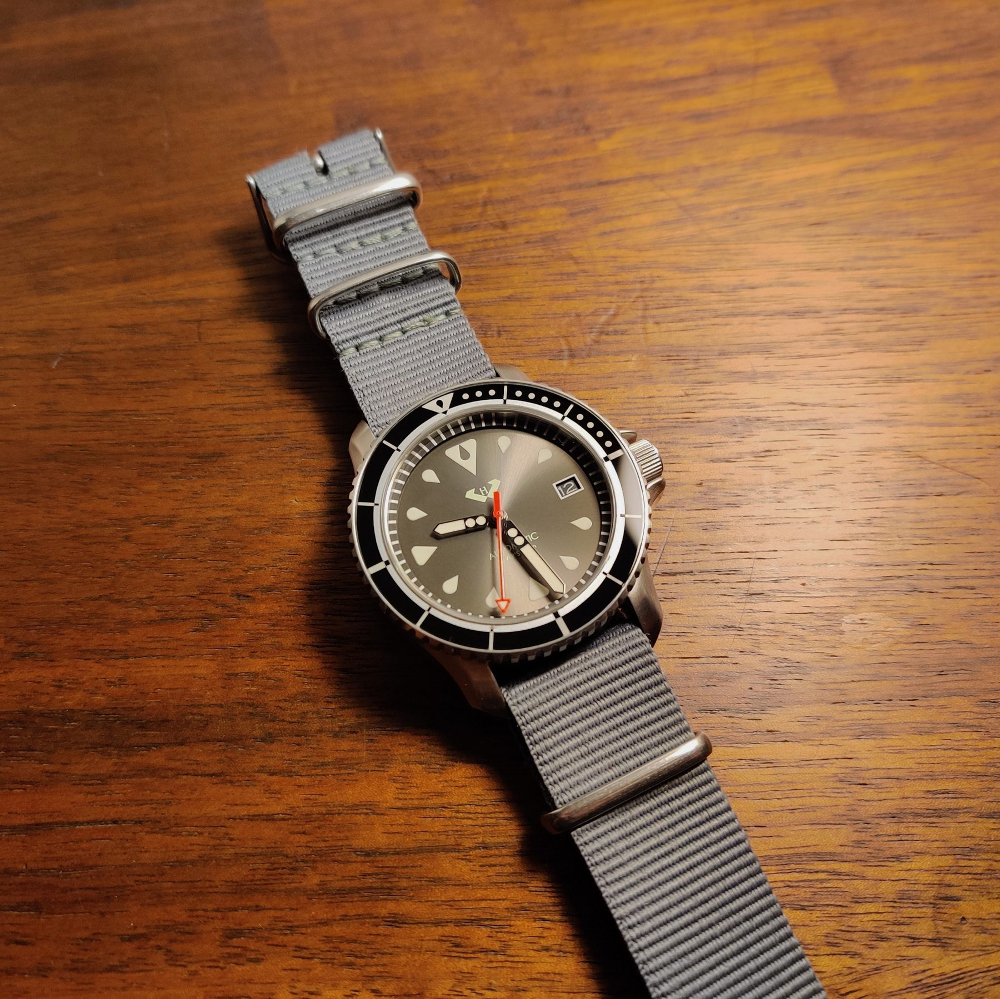
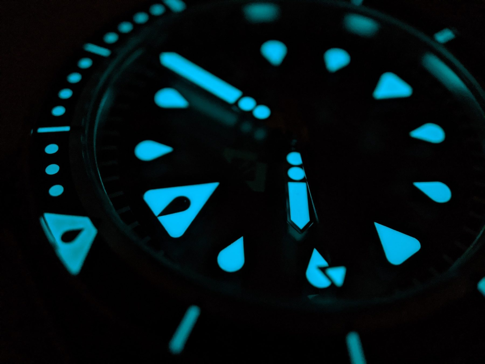
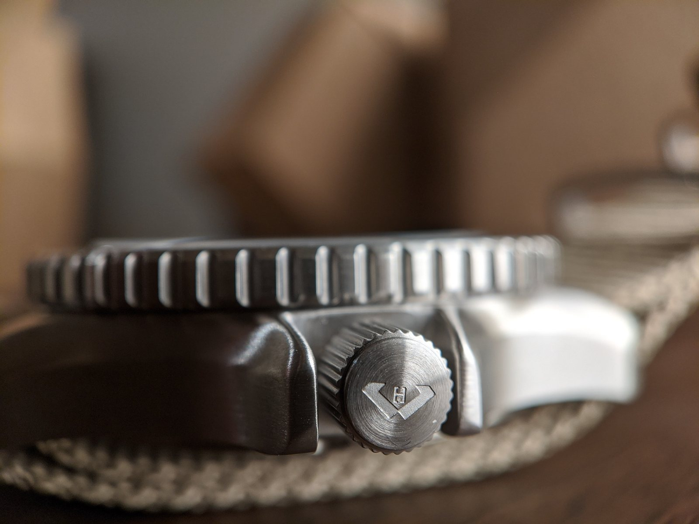

Hyalus watch build
Designed Altum, a 40mm automatic dive watch with 200m water resistance, then tried launching it on Kickstarter.
Context
Hyalus is the dive watch I designed from scratch.
I took Altum from sketches to CAD to a working prototype, then ran a Kickstarter launch. The campaign reached 116 backers and $26,891 pledged.
Watch highlights
- 40mm stainless steel case.
- 200m water resistance.
- Seiko NH35 automatic movement with a ~41-hour power reserve.
- Tool-first dial and lots of lume for low light.
What I owned
- Modeled the watch and iterated toward manufacturable, wearable decisions.
- Coordinated suppliers for components, finish options, and tolerances.
- Treated drawings, part lists, and acceptance criteria as deliverables, not supporting material.
- Tested like a user by wearing it, looking for failure modes, and revising the next iteration.
- Built the Kickstarter campaign: visuals, copy, reward tiers, and launch plan.
Constraints and complexity
- No external deadlines and no built-in accountability beyond the artifact itself.
- Physical tolerances where small changes compound into downstream assembly issues.
- Subjective fit and finish that must be made concrete with simple checks and photos.
Results
- Built a working prototype and a documented spec that could be critiqued, improved, and repeated.
- Launched a Kickstarter campaign that reached 116 backers and $26,891 pledged.
- Managed a $4k marketing budget to test acquisition during launch.
- Created a complete end-to-end artifact: product, brand, supply coordination, and launch execution.
What I learned
- Specs are a delivery tool. If they are vague, the product becomes vague.
- Small decisions compound fast once suppliers and tolerances stack.
- Launching is its own discipline, separate from building the thing.
Gallery


